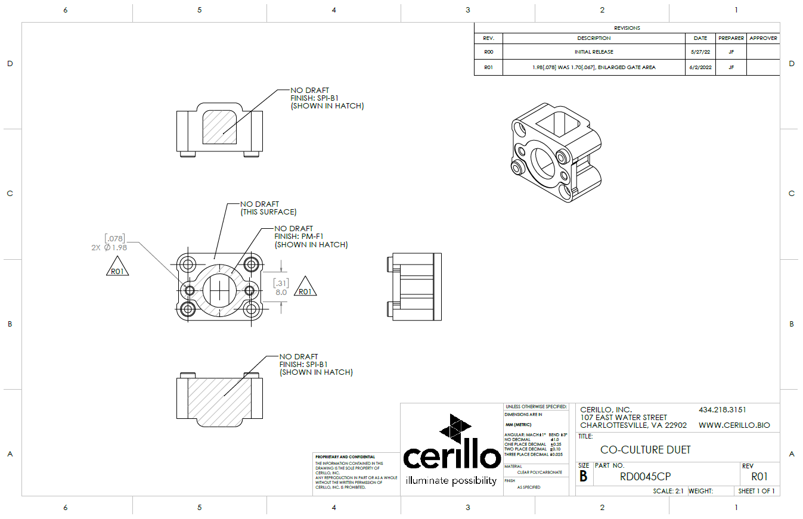
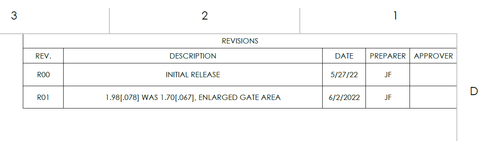
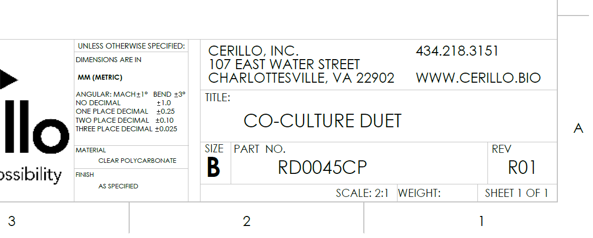
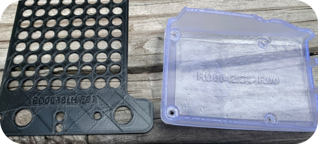

Part Numbering and Revisions
Keeping track of CAD files in an organized way is a critical component to working as part of a team.
There are two main ways we track our engineering design progress at Cerillo.
Organization
Part Numbering
Revision Control
Part Numbering
Part Numbering is one of the most important facets of engineering design and communication. It takes the ambiguity out of both internal and external conversations.
This is incredibly important when working with vendors. Email chains can get long when you’re talking through design changes, and when it comes time to order, it helps a lot to be able to specify and exact part number to reference the component you want them to make.
Cerillo stores it’s part numbers in an open repository: Cerillo Part Number Repository
Part Numbers are composed in three parts, taking the form:
AA0000BB
AA - Category Designator (RD,STA,STR, etc.)
0000 - Unique Part Identifier Number (0001, 0045, 0253, etc.)
BB - Part Descriptor (CP, EL, LB, etc.)
Category Designator
Category designators distinguish the high level project that the component is associated with. All R&D projects start with the designator RD. Once R&D components are transitioned to production, they are given a new production level designator specific to that project. Examples of current designators are as follows:
Category Designator |
Description |
|---|---|
RD |
R&D Part Number |
RDA |
R&D Assembly Number |
STR |
Stratus Part Number |
STA |
Stratus Adapter Part Number |
Part Number
Each Category has it’s own tab in the Cerillo Part Number Repository. All existing part numbers are listed here. To create a new part number for a given project tab, create a new row and assign it the next numerical value in the list. For example, if the last part number in the list is RD0123BB, the next part should be assigned the number RD0124BB. Add your intials and the date of assignment for historical tracking purposes.
Part Descriptor
The last component in assigning a part number is giving it a descriptor. A descriptor is meant to give a short referential clue as to its function. For example, if we were designing a pipette tip, we might use the descriptor “PT”. Using the above example our completed part number would be RD0124PT.
Let’s say we are designing a circuit board intended to shoot nerf rockets at lawyers, we could use the descriptor “NR” or “RL”. In this case our respective part numbers would be RD0124NR or RD0124RL.
Part descriptors are your choice as the designer. Choose one that has meaning to you.
Revision Control
Keeping track of revisions for boards and components is an important part of engineering bookkeeping. Revisions are used to track changes to custom components, assemblies, boards etc. that are used in prototypes and products. We use revision numbers to improve internal and external communication with regard to part versioning. Without explicit revision numbers we could end up in a situation where we have a “new” version of a part. Then two months later we revise it, and have a “new new” version of the part. It quickly becomes tedious to track, and there’s a risk of ordering the wrong parts from an external vendor.
Cerillo track part numbers using the following scheme:
Revision |
Revision Description |
|---|---|
R00 |
Initial Revision |
R01 |
Subsequent Revision - List of Changes |
R02 |
Another Revision and so on… |
Revisions are tracked within component or board drawings and documentation. Every time a change is made to a component or its drawing, the revision number should be updated.
This is an example of an engineering drawing of component RD0045CP R01. Looking at the revision history table, this component has had two revisions: R00 and R01. R01 is the most current revision which is displayed in the title block.

On engineering drawings the revision number is tracked in two places: the revision history table (top-right) and the title block (lower-right).


It is also good practice to put part numbers and revisions onto components themselves - if it makes sense based on the design.
